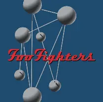
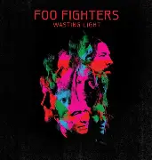
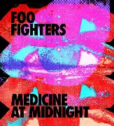

Discografía
Estos son algunos de los álbumes más representativos de esta banda, con enlace directo a YouTube para escuchar el disco completo.
Álbumes Destacados

The Colour and the Shape (1997)
- Este álbum consolidó a Foo Fighters como banda, con éxitos como Everlong, Monkey Wrench y My Hero.
Escuchar en YouTube

Wasting Light (2011)
Grabado íntegramente en cinta analógica en el garage de Dave Grohl, este álbum recibió elogios por su energía cruda y autenticidad.
Escuchar en YouTube

Medicine at Midnight (2021)
Representa una evolución en el sonido de la banda, con influencias más pop y dance rock.
Escuchar en YouTube